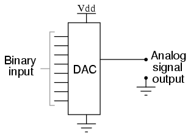
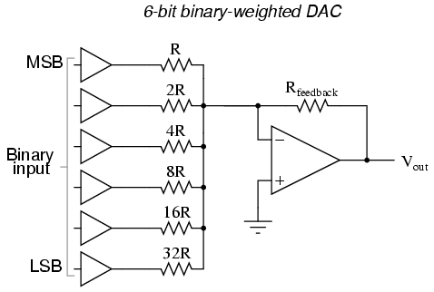
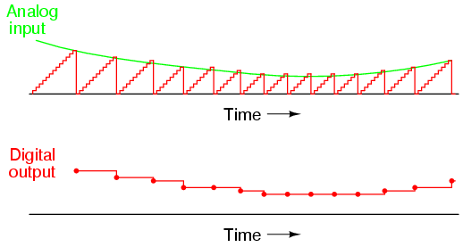
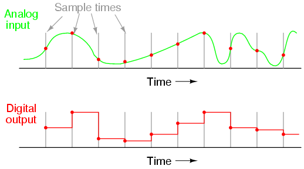

Connecting digital circuitry to sensor devices is simple if the sensor devices are inherently digital themselves. Switches, relays, and encoders are easily interfaced with gate circuits due to the on/off nature of their signals. However, when analog devices are involved, interfacing becomes much more complex. What is needed is a way to electronically translate analog signals into digital (binary) quantities, and vice versa. An analog-to-digital converter, or ADC, performs the former task while a digital-to-analog converter, or DAC, performs the latter.
An ADC inputs an analog electrical signal such as voltage or current and outputs a binary number. In block diagram form, it can be represented as such:
A DAC, on the other hand, inputs a binary number and outputs an analog voltage or current signal. In block diagram form, it looks like this:

Together, they are often used in digital systems to provide complete interface with analog sensors and output devices for control systems such as those used in automotive engine controls:
It is much easier to convert a digital signal into an analog signal than it is to do the reverse. Therefore, we will begin with DAC circuitry and then move to ADC circuitry.
This DAC circuit, otherwise known as the binary-weighted-input DAC, is a variation on the inverting summer op-amp circuit. If you recall, the classic inverting summer circuit is an operational amplifier using negative feedback for controlled gain, with several voltage inputs and one voltage output. The output voltage is the inverted (opposite polarity) sum of all input voltages:

For a simple inverting summer circuit, all resistors must be of equal value. If any of the input resistors were different, the input voltages would have different degrees of effect on the output, and the output voltage would not be a true sum. Let's consider, however, intentionally setting the input resistors at different values. Suppose we were to set the input resistor values at multiple powers of two: R, 2R, and 4R, instead of all the same value R:
Starting from V1 and going through V3, this would give each input voltage exactly half the effect on the output as the voltage before it. In other words, input voltage V1 has a 1:1 effect on the output voltage (gain of 1), while input voltage V2 has half that much effect on the output (a gain of 1/2), and V3 half of that (a gain of 1/4). These ratios are were not arbitrarily chosen: they are the same ratios corresponding to place weights in the binary numeration system. If we drive the inputs of this circuit with digital gates so that each input is either 0 volts or full supply voltage, the output voltage will be an analog representation of the binary value of these three bits.
If we chart the output voltages for all eight combinations of binary bits (000 through 111) input to this circuit, we will get the following progression of voltages:
--------------------------------- | Binary | Output voltage | --------------------------------- | 000 | 0.00 V | --------------------------------- | 001 | -1.25 V | --------------------------------- | 010 | -2.50 V | --------------------------------- | 011 | -3.75 V | --------------------------------- | 100 | -5.00 V | --------------------------------- | 101 | -6.25 V | --------------------------------- | 110 | -7.50 V | --------------------------------- | 111 | -8.75 V | ---------------------------------
Note that with each step in the binary count sequence, there results a 1.25 volt change in the output. This circuit is very easy to simulate using SPICE. In the following simulation, I set up the DAC circuit with a binary input of 110 (note the first node numbers for resistors R1, R2, and R3: a node number of "1" connects it to the positive side of a 5 volt battery, and a node number of "0" connects it to ground). The output voltage appears on node 6 in the simulation:
binary-weighted dac v1 1 0 dc 5 rbogus 1 0 99k r1 1 5 1k r2 1 5 2k r3 0 5 4k rfeedbk 5 6 1k e1 6 0 5 0 999k .end node voltage node voltage node voltage (1) 5.0000 (5) 0.0000 (6) -7.5000
We can adjust resistors values in this circuit to obtain output voltages directly corresponding to the binary input. For example, by making the feedback resistor 800 Ω instead of 1 kΩ, the DAC will output -1 volt for the binary input 001, -4 volts for the binary input 100, -7 volts for the binary input 111, and so on.
(with feedback resistor set at 800 ohms) --------------------------------- | Binary | Output voltage | --------------------------------- | 000 | 0.00 V | --------------------------------- | 001 | -1.00 V | --------------------------------- | 010 | -2.00 V | --------------------------------- | 011 | -3.00 V | --------------------------------- | 100 | -4.00 V | --------------------------------- | 101 | -5.00 V | --------------------------------- | 110 | -6.00 V | --------------------------------- | 111 | -7.00 V | ---------------------------------
If we wish to expand the resolution of this DAC (add more bits to the input), all we need to do is add more input resistors, holding to the same power-of-two sequence of values:

It should be noted that all logic gates must output exactly the same voltages when in the "high" state. If one gate is outputting +5.02 volts for a "high" while another is outputting only +4.86 volts, the analog output of the DAC will be adversely affected. Likewise, all "low" voltage levels should be identical between gates, ideally 0.00 volts exactly. It is recommended that CMOS output gates are used, and that input/feedback resistor values are chosen so as to minimize the amount of current each gate has to source or sink.
An alternative to the binary-weighted-input DAC is the so-called R/2R DAC, which uses fewer unique resistor values. A disadvantage of the former DAC design was its requirement of several different precise input resistor values: one unique value per binary input bit. Manufacture may be simplified if there are fewer different resistor values to purchase, stock, and sort prior to assembly.
Of course, we could take our last DAC circuit and modify it to use a single input resistance value, by connecting multiple resistors together in series:
Unfortunately, this approach merely substitutes one type of complexity for another: volume of components over diversity of component values. There is, however, a more efficient design methodology.
By constructing a different kind of resistor network on the input of our summing circuit, we can achieve the same kind of binary weighting with only two kinds of resistor values, and with only a modest increase in resistor count. This "ladder" network looks like this:
Mathematically analyzing this ladder network is a bit more complex than for the previous circuit, where each input resistor provided an easily-calculated gain for that bit. For those who are interested in pursuing the intricacies of this circuit further, you may opt to use Thevenin's theorem for each binary input (remember to consider the effects of the virtual ground), and/or use a simulation program like SPICE to determine circuit response. Either way, you should obtain the following table of figures:
--------------------------------- | Binary | Output voltage | --------------------------------- | 000 | 0.00 V | --------------------------------- | 001 | -1.25 V | --------------------------------- | 010 | -2.50 V | --------------------------------- | 011 | -3.75 V | --------------------------------- | 100 | -5.00 V | --------------------------------- | 101 | -6.25 V | --------------------------------- | 110 | -7.50 V | --------------------------------- | 111 | -8.75 V | ---------------------------------
As was the case with the binary-weighted DAC design, we can modify the value of the feedback resistor to obtain any "span" desired. For example, if we're using +5 volts for a "high" voltage level and 0 volts for a "low" voltage level, we can obtain an analog output directly corresponding to the binary input (011 = -3 volts, 101 = -5 volts, 111 = -7 volts, etc.) by using a feedback resistance with a value of 1.6R instead of 2R.
Also called the parallel A/D converter, this circuit is the simplest to understand. It is formed of a series of comparators, each one comparing the input signal to a unique reference voltage. The comparator outputs connect to the inputs of a priority encoder circuit, which then produces a binary output. The following illustration shows a 3-bit flash ADC circuit:

Vref is a stable reference voltage provided by a precision voltage regulator as part of the converter circuit, not shown in the schematic. As the analog input voltage exceeds the reference voltage at each comparator, the comparator outputs will sequentially saturate to a high state. The priority encoder generates a binary number based on the highest-order active input, ignoring all other active inputs.
When operated, the flash ADC produces an output that looks something like this:
For this particular application, a regular priority encoder with all its inherent complexity isn't necessary. Due to the nature of the sequential comparator output states (each comparator saturating "high" in sequence from lowest to highest), the same "highest-order-input selection" effect may be realized through a set of Exclusive-OR gates, allowing the use of a simpler, non-priority encoder:
And, of course, the encoder circuit itself can be made from a matrix of diodes, demonstrating just how simply this converter design may be constructed:
Not only is the flash converter the simplest in terms of operational theory, but it is the most efficient of the ADC technologies in terms of speed, being limited only in comparator and gate propagation delays. Unfortunately, it is the most component-intensive for any given number of output bits. This three-bit flash ADC requires seven comparators. A four-bit version would require 15 comparators. With each additional output bit, the number of required comparators doubles. Considering that eight bits is generally considered the minimum necessary for any practical ADC (255 comparators needed!), the flash methodology quickly shows its weakness.
An additional advantage of the flash converter, often overlooked, is the ability for it to produce a non-linear output. With equal-value resistors in the reference voltage divider network, each successive binary count represents the same amount of analog signal increase, providing a proportional response. For special applications, however, the resistor values in the divider network may be made non-equal. This gives the ADC a custom, nonlinear response to the analog input signal. No other ADC design is able to grant this signal-conditioning behavior with just a few component value changes.
Also known as the stairstep-ramp, or simply counter A/D converter, this is also fairly easy to understand but unfortunately suffers from several limitations.
The basic idea is to connect the output of a free-running binary counter to the input of a DAC, then compare the analog output of the DAC with the analog input signal to be digitized and use the comparator's output to tell the counter when to stop counting and reset. The following schematic shows the basic idea:
As the counter counts up with each clock pulse, the DAC outputs a slightly higher (more positive) voltage. This voltage is compared against the input voltage by the comparator. If the input voltage is greater than the DAC output, the comparator's output will be high and the counter will continue counting normally. Eventually, though, the DAC output will exceed the input voltage, causing the comparator's output to go low. This will cause two things to happen: first, the high-to-low transition of the comparator's output will cause the shift register to "load" whatever binary count is being output by the counter, thus updating the ADC circuit's output; secondly, the counter will receive a low signal on the active-low LOAD input, causing it to reset to 00000000 on the next clock pulse.
The effect of this circuit is to produce a DAC output that ramps up to whatever level the analog input signal is at, output the binary number corresponding to that level, and start over again. Plotted over time, it looks like this:

Note how the time between updates (new digital output values) changes depending on how high the input voltage is. For low signal levels, the updates are rather close-spaced. For higher signal levels, they are spaced further apart in time:
For many ADC applications, this variation in update frequency (sample time) would not be acceptable. This, and the fact that the circuit's need to count all the way from 0 at the beginning of each count cycle makes for relatively slow sampling of the analog signal, places the digital-ramp ADC at a disadvantage to other counter strategies.
One method of addressing the digital ramp ADC's shortcomings is the so-called successive-approximation ADC. The only change in this design is a very special counter circuit known as a successive-approximation register. Instead of counting up in binary sequence, this register counts by trying all values of bits starting with the most-significant bit and finishing at the least-significant bit. Throughout the count process, the register monitors the comparator's output to see if the binary count is less than or greater than the analog signal input, adjusting the bit values accordingly. The way the register counts is identical to the "trial-and-fit" method of decimal-to-binary conversion, whereby different values of bits are tried from MSB to LSB to get a binary number that equals the original decimal number. The advantage to this counting strategy is much faster results: the DAC output converges on the analog signal input in much larger steps than with the 0-to-full count sequence of a regular counter.
Without showing the inner workings of the successive-approximation register (SAR), the circuit looks like this:
It should be noted that the SAR is generally capable of outputting the binary number in serial (one bit at a time) format, thus eliminating the need for a shift register. Plotted over time, the operation of a successive-approximation ADC looks like this:
Note how the updates for this ADC occur at regular intervals, unlike the digital ramp ADC circuit.
A third variation on the counter-DAC-based converter theme is, in my estimation, the most elegant. Instead of a regular "up" counter driving the DAC, this circuit uses an up/down counter. The counter is continuously clocked, and the up/down control line is driven by the output of the comparator. So, when the analog input signal exceeds the DAC output, the counter goes into the "count up" mode. When the DAC output exceeds the analog input, the counter switches into the "count down" mode. Either way, the DAC output always counts in the proper direction to track the input signal.

Notice how no shift register is needed to buffer the binary count at the end of a cycle. Since the counter's output continuously tracks the input (rather than counting to meet the input and then resetting back to zero), the binary output is legitimately updated with every clock pulse.
An advantage of this converter circuit is speed, since the counter never has to reset. Note the behavior of this circuit:
Note the much faster update time than any of the other "counting" ADC circuits. Also note how at the very beginning of the plot where the counter had to "catch up" with the analog signal, the rate of change for the output was identical to that of the first counting ADC. Also, with no shift register in this circuit, the binary output would actually ramp up rather than jump from zero to an accurate count as it did with the counter and successive approximation ADC circuits.
Perhaps the greatest drawback to this ADC design is the fact that the binary output is never stable: it always switches between counts with every clock pulse, even with a perfectly stable analog input signal. This phenomenon is informally known as bit bobble, and it can be problematic in some digital systems.
This tendency can be overcome, though, through the creative use of a shift register. For example, the counter's output may be latched through a parallel-in/parallel-out shift register only when the output changes by two or more steps. Building a circuit to detect two or more successive counts in the same direction takes a little ingenuity, but is worth the effort.
So far, we've only been able to escape the sheer volume of components in the flash converter by using a DAC as part of our ADC circuitry. However, this is not our only option. It is possible to avoid using a DAC if we substitute an analog ramping circuit and a digital counter with precise timing.
The is the basic idea behind the so-called single-slope, or integrating ADC. Instead of using a DAC with a ramped output, we use an op-amp circuit called an integrator to generate a sawtooth waveform which is then compared against the analog input by a comparator. The time it takes for the sawtooth waveform to exceed the input signal voltage level is measured by means of a digital counter clocked with a precise-frequency square wave (usually from a crystal oscillator). The basic schematic diagram is shown here:
The IGFET capacitor-discharging transistor scheme shown here is a bit oversimplified. In reality, a latching circuit timed with the clock signal would most likely have to be connected to the IGFET gate to ensure full discharge of the capacitor when the comparator's output goes high. The basic idea, however, is evident in this diagram. When the comparator output is low (input voltage greater than integrator output), the integrator is allowed to charge the capacitor in a linear fashion. Meanwhile, the counter is counting up at a rate fixed by the precision clock frequency. The time it takes for the capacitor to charge up to the same voltage level as the input depends on the input signal level and the combination of -Vref, R, and C. When the capacitor reaches that voltage level, the comparator output goes high, loading the counter's output into the shift register for a final output. The IGFET is triggered "on" by the comparator's high output, discharging the capacitor back to zero volts. When the integrator output voltage falls to zero, the comparator output switches back to a low state, clearing the counter and enabling the integrator to ramp up voltage again.
This ADC circuit behaves very much like the digital ramp ADC, except that the comparator reference voltage is a smooth sawtooth waveform rather than a "stairstep:"
The single-slope ADC suffers all the disadvantages of the digital ramp ADC, with the added drawback of calibration drift. The accurate correspondence of this ADC's output with its input is dependent on the voltage slope of the integrator being matched to the counting rate of the counter (the clock frequency). With the digital ramp ADC, the clock frequency had no effect on conversion accuracy, only on update time. In this circuit, since the rate of integration and the rate of count are independent of each other, variation between the two is inevitable as it ages, and will result in a loss of accuracy. The only good thing to say about this circuit is that it avoids the use of a DAC, which reduces circuit complexity.
An answer to this calibration drift dilemma is found in a design variation called the dual-slope converter. In the dual-slope converter, an integrator circuit is driven positive and negative in alternating cycles to ramp down and then up, rather than being reset to 0 volts at the end of every cycle. In one direction of ramping, the integrator is driven by the positive analog input signal (producing a negative, variable rate of output voltage change, or output slope) for a fixed amount of time, as measured by a counter with a precision frequency clock. Then, in the other direction, with a fixed reference voltage (producing a fixed rate of output voltage change) with time measured by the same counter. The counter stops counting when the integrator's output reaches the same voltage as it was when it started the fixed-time portion of the cycle. The amount of time it takes for the integrator's capacitor to discharge back to its original output voltage, as measured by the magnitude accrued by the counter, becomes the digital output of the ADC circuit.
The dual-slope method can be thought of analogously in terms of a rotary spring such as that used in a mechanical clock mechanism. Imagine we were building a mechanism to measure the rotary speed of a shaft. Thus, shaft speed is our "input signal" to be measured by this device. The measurement cycle begins with the spring in a relaxed state. The spring is then turned, or "wound up," by the rotating shaft (input signal) for a fixed amount of time. This places the spring in a certain amount of tension proportional to the shaft speed: a greater shaft speed corresponds to a faster rate of winding. and a greater amount of spring tension accumulated over that period of time. After that, the spring is uncoupled from the shaft and allowed to unwind at a fixed rate, the time for it to unwind back to a relaxed state measured by a timer device. The amount of time it takes for the spring to unwind at that fixed rate will be directly proportional to the speed at which it was wound (input signal magnitude) during the fixed-time portion of the cycle.
This technique of analog-to-digital conversion escapes the calibration drift problem of the single-slope ADC because both the integrator's integration coefficient (or "gain") and the counter's rate of speed are in effect during the entire "winding" and "unwinding" cycle portions. If the counter's clock speed were to suddenly increase, this would shorten the fixed time period where the integrator "winds up" (resulting in a lesser voltage accumulated by the integrator), but it would also mean that it would count faster during the period of time when the integrator was allowed to "unwind" at a fixed rate. The proportion that the counter is counting faster will be the same proportion as the integrator's accumulated voltage is diminished from before the clock speed change. Thus, the clock speed error would cancel itself out and the digital output would be exactly what it should be.
Another important advantage of this method is that the input signal becomes averaged as it drives the integrator during the fixed-time portion of the cycle. Any changes in the analog signal during that period of time have a cumulative effect on the digital output at the end of that cycle. Other ADC strategies merely "capture" the analog signal level at a single point in time every cycle. If the analog signal is "noisy" (contains significant levels of spurious voltage spikes/dips), one of the other ADC converter technologies may occasionally convert a spike or dip because it captures the signal repeatedly at a single point in time. A dual-slope ADC, on the other hand, averages together all the spikes and dips within the integration period, thus providing an output with greater noise immunity. Dual-slope ADCs are used in applications demanding high accuracy.
One of the more advanced ADC technologies is the so-called delta-sigma, or ΔΣ (using the proper Greek letter notation). In mathematics and physics, the capital Greek letter delta (Δ) represents difference or change, while the capital letter sigma (Σ) represents summation: the adding of multiple terms together. Sometimes this converter is referred to by the same Greek letters in reverse order: sigma-delta, or ΣΔ.
In a ΔΣ converter, the analog input voltage signal is connected to the input of an integrator, producing a voltage rate-of-change, or slope, at the output corresponding to input magnitude. This ramping voltage is then compared against ground potential (0 volts) by a comparator. The comparator acts as a sort of 1-bit ADC, producing 1 bit of output ("high" or "low") depending on whether the integrator output is positive or negative. The comparator's output is then latched through a D-type flip-flop clocked at a high frequency, and fed back to another input channel on the integrator, to drive the integrator in the direction of a 0 volt output. The basic circuit looks like this:
The leftmost op-amp is the (summing) integrator. The next op-amp the integrator feeds into is the comparator, or 1-bit ADC. Next comes the D-type flip-flop, which latches the comparator's output at every clock pulse, sending either a "high" or "low" signal to the next comparator at the top of the circuit. This final comparator is necessary to convert the single-polarity 0V / 5V logic level output voltage of the flip-flop into a +V / -V voltage signal to be fed back to the integrator.
If the integrator output is positive, the first comparator will output a "high" signal to the D input of the flip-flop. At the next clock pulse, this "high" signal will be output from the Q line into the noninverting input of the last comparator. This last comparator, seeing an input voltage greater than the threshold voltage of 1/2 +V, saturates in a positive direction, sending a full +V signal to the other input of the integrator. This +V feedback signal tends to drive the integrator output in a negative direction. If that output voltage ever becomes negative, the feedback loop will send a corrective signal (-V) back around to the top input of the integrator to drive it in a positive direction. This is the delta-sigma concept in action: the first comparator senses a difference (Δ) between the integrator output and zero volts. The integrator sums (Σ) the comparator's output with the analog input signal.
Functionally, this results in a serial stream of bits output by the flip-flop. If the analog input is zero volts, the integrator will have no tendency to ramp either positive or negative, except in response to the feedback voltage. In this scenario, the flip-flop output will continually oscillate between "high" and "low," as the feedback system "hunts" back and forth, trying to maintain the integrator output at zero volts:
If, however, we apply a negative analog input voltage, the integrator will have a tendency to ramp its output in a positive direction. Feedback can only add to the integrator's ramping by a fixed voltage over a fixed time, and so the bit stream output by the flip-flop will not be quite the same:
By applying a larger (negative) analog input signal to the integrator, we force its output to ramp more steeply in the positive direction. Thus, the feedback system has to output more 1's than before to bring the integrator output back to zero volts:

As the analog input signal increases in magnitude, so does the occurrence of 1's in the digital output of the flip-flop:
A parallel binary number output is obtained from this circuit by averaging the serial stream of bits together. For example, a counter circuit could be designed to collect the total number of 1's output by the flip-flop in a given number of clock pulses. This count would then be indicative of the analog input voltage.
Variations on this theme exist, employing multiple integrator stages and/or comparator circuits outputting more than 1 bit, but one concept common to all ΔΣ converters is that of oversampling. Oversampling is when multiple samples of an analog signal are taken by an ADC (in this case, a 1-bit ADC), and those digitized samples are averaged. The end result is an effective increase in the number of bits resolved from the signal. In other words, an oversampled 1-bit ADC can do the same job as an 8-bit ADC with one-time sampling, albeit at a slower rate.
Perhaps the most important consideration of an ADC is its resolution. Resolution is the number of binary bits output by the converter. Because ADC circuits take in an analog signal, which is continuously variable, and resolve it into one of many discrete steps, it is important to know how many of these steps there are in total.
For example, an ADC with a 10-bit output can represent up to 1024 (210) unique conditions of signal measurement. Over the range of measurement from 0% to 100%, there will be exactly 1024 unique binary numbers output by the converter (from 0000000000 to 1111111111, inclusive). An 11-bit ADC will have twice as many states to its output (2048, or 211), representing twice as many unique conditions of signal measurement between 0% and 100%.
Resolution is very important in data acquisition systems (circuits designed to interpret and record physical measurements in electronic form). Suppose we were measuring the height of water in a 40-foot tall storage tank using an instrument with a 10-bit ADC. 0 feet of water in the tank corresponds to 0% of measurement, while 40 feet of water in the tank corresponds to 100% of measurement. Because the ADC is fixed at 10 bits of binary data output, it will interpret any given tank level as one out of 1024 possible states. To determine how much physical water level will be represented in each step of the ADC, we need to divide the 40 feet of measurement span by the number of steps in the 0-to-1024 range of possibilities, which is 1023 (one less than 1024). Doing this, we obtain a figure of 0.039101 feet per step. This equates to 0.46921 inches per step, a little less than half an inch of water level represented for every binary count of the ADC.
This step value of 0.039101 feet (0.46921 inches) represents the smallest amount of tank level change detectable by the instrument. Admittedly, this is a small amount, less than 0.1% of the overall measurement span of 40 feet. However, for some applications it may not be fine enough. Suppose we needed this instrument to be able to indicate tank level changes down to one-tenth of an inch. In order to achieve this degree of resolution and still maintain a measurement span of 40 feet, we would need an instrument with more than ten ADC bits.
To determine how many ADC bits are necessary, we need to first determine how many 1/10 inch steps there are in 40 feet. The answer to this is 40/(0.1/12), or 4800 1/10 inch steps in 40 feet. Thus, we need enough bits to provide at least 4800 discrete steps in a binary counting sequence. 10 bits gave us 1023 steps, and we knew this by calculating 2 to the power of 10 (210 = 1024) and then subtracting one. Following the same mathematical procedure, 211-1 = 2047, 212-1 = 4095, and 213-1 = 8191. 12 bits falls shy of the amount needed for 4800 steps, while 13 bits is more than enough. Therefore, we need an instrument with at least 13 bits of resolution.
Another important consideration of ADC circuitry is its sample frequency, or conversion rate. This is simply the speed at which the converter outputs a new binary number. Like resolution, this consideration is linked to the specific application of the ADC. If the converter is being used to measure slow-changing signals such as level in a water storage tank, it could probably have a very slow sample frequency and still perform adequately. Conversely, if it is being used to digitize an audio frequency signal cycling at several thousand times per second, the converter needs to be considerably faster.
Consider the following illustration of ADC conversion rate versus signal type, typical of a successive-approximation ADC with regular sample intervals:
Here, for this slow-changing signal, the sample rate is more than adequate to capture its general trend. But consider this example with the same sample time:

When the sample period is too long (too slow), substantial details of the analog signal will be missed. Notice how, especially in the latter portions of the analog signal, the digital output utterly fails to reproduce the true shape. Even in the first section of the analog waveform, the digital reproduction deviates substantially from the true shape of the wave.
It is imperative that an ADC's sample time is fast enough to capture essential changes in the analog waveform. In data acquisition terminology, the highest-frequency waveform that an ADC can theoretically capture is the so-called Nyquist frequency, equal to one-half of the ADC's sample frequency. Therefore, if an ADC circuit has a sample frequency of 5000 Hz, the highest-frequency waveform it can successfully resolve will be the Nyquist frequency of 2500 Hz.
If an ADC is subjected to an analog input signal whose frequency exceeds the Nyquist frequency for that ADC, the converter will output a digitized signal of falsely low frequency. This phenomenon is known as aliasing. Observe the following illustration to see how aliasing occurs:
Note how the period of the output waveform is much longer (slower) than that of the input waveform, and how the two waveform shapes aren't even similar:
It should be understood that the Nyquist frequency is an absolute maximum frequency limit for an ADC, and does not represent the highest practical frequency measurable. To be safe, one shouldn't expect an ADC to successfully resolve any frequency greater than one-fifth to one-tenth of its sample frequency.
A practical means of preventing aliasing is to place a low-pass filter before the input of the ADC, to block any signal frequencies greater than the practical limit. This way, the ADC circuitry will be prevented from seeing any excessive frequencies and thus will not try to digitize them. It is generally considered better that such frequencies go unconverted than to have them be "aliased" and appear in the output as false signals.
Yet another measure of ADC performance is something called step recovery. This is a measure of how quickly an ADC changes its output to match a large, sudden change in the analog input. In some converter technologies especially, step recovery is a serious limitation. One example is the tracking converter, which has a typically fast update period but a disproportionately slow step recovery.
An ideal ADC has a great many bits for very fine resolution, samples at lightning-fast speeds, and recovers from steps instantly. It also, unfortunately, doesn't exist in the real world. Of course, any of these traits may be improved through additional circuit complexity, either in terms of increased component count and/or special circuit designs made to run at higher clock speeds. Different ADC technologies, though, have different strengths. Here is a summary of them ranked from best to worst:
Resolution/complexity ratio:
Single-slope integrating, dual-slope integrating, counter, tracking, successive approximation, flash.
Speed:
Flash, tracking, successive approximation, single-slope integrating & counter, dual-slope integrating.
Step recovery:
Flash, successive-approximation, single-slope integrating & counter, dual-slope integrating, tracking.
Please bear in mind that the rankings of these different ADC technologies depend on other factors. For instance, how an ADC rates on step recovery depends on the nature of the step change. A tracking ADC is equally slow to respond to all step changes, whereas a single-slope or counter ADC will register a high-to-low step change quicker than a low-to-high step change. Successive-approximation ADCs are almost equally fast at resolving any analog signal, but a tracking ADC will consistently beat a successive-approximation ADC if the signal is changing slower than one resolution step per clock pulse. I ranked integrating converters as having a greater resolution/complexity ratio than counter converters, but this assumes that precision analog integrator circuits are less complex to design and manufacture than precision DACs required within counter-based converters. Others may not agree with this assumption.
Lessons In Electric Circuits copyright (C) 2000-2023 Tony R. Kuphaldt, under the terms and conditions of the CC BY License.